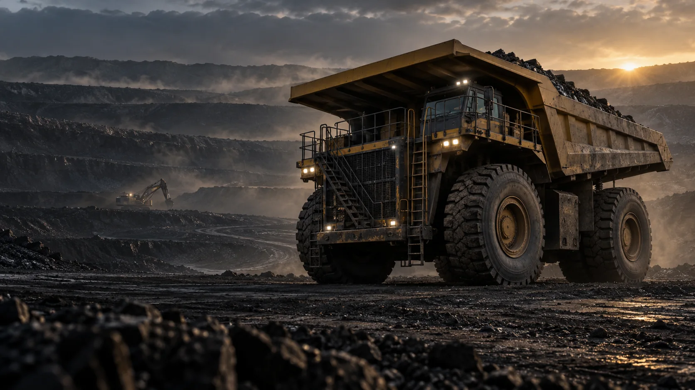
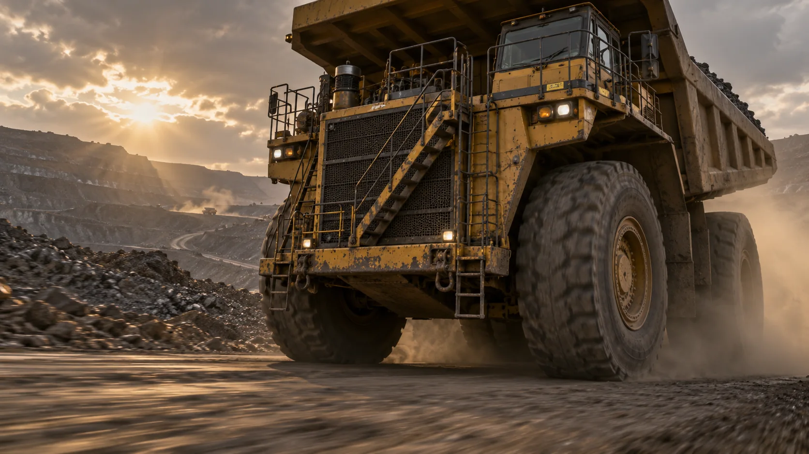
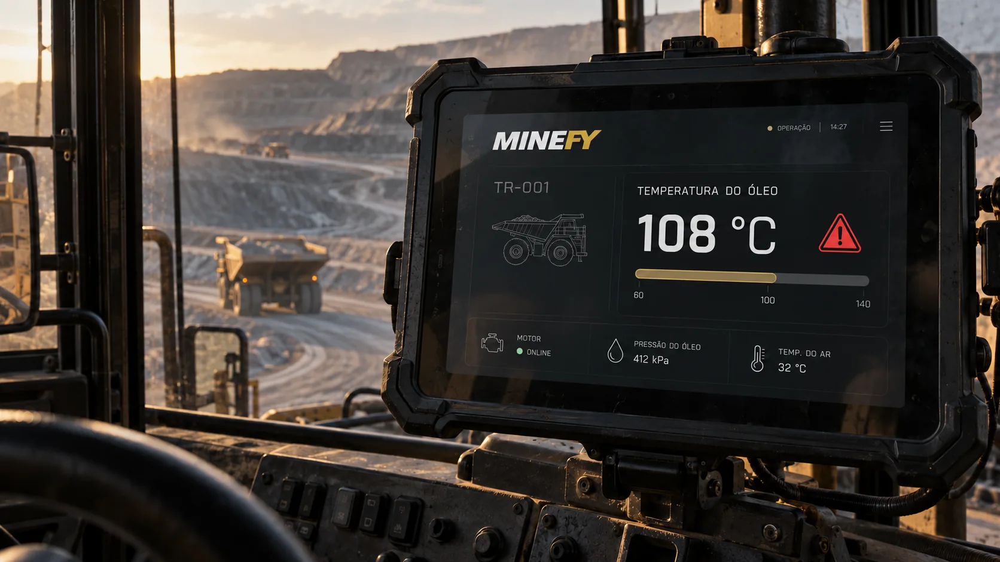
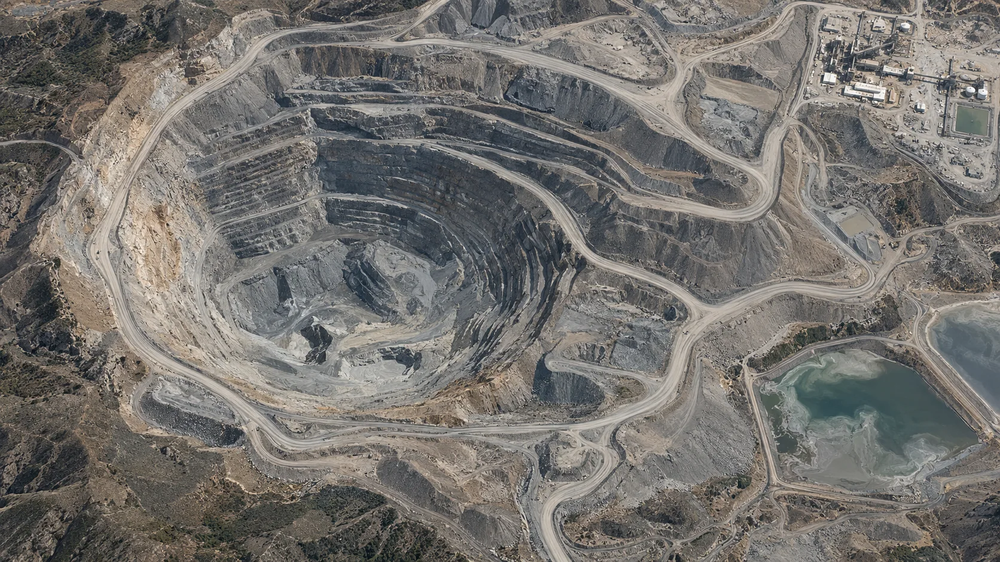
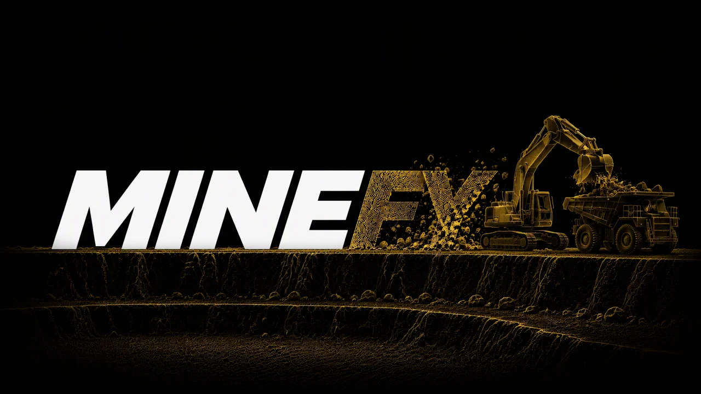

O FUTURO
DA MINA É
CONECTADO.
Da força das máquinas à precisão dos dados.
Da operação ao próximo nível de inteligência.
UMA NOVA PERSPECTIVA
TECNOLOGIA PARA OPERAÇÕES REAIS
TUDO COMEÇA
EM CAMPO.
Perfurar, escavar, carregar. Equipamentos diferentes, um mesmo ciclo. A operação precisa de ritmo — e de visibilidade.
LEITURA ILUSTRATIVA
ANTES DA PARADA,
OS SINAIS.
O motor não conta sua história em um único número. Temperatura, pressão, carga e histórico precisam ser lidos em conjunto.
Um equipamento.
Vários sinais para acompanhar.
Mova os parâmetros ou execute o cenário para ver quando os sinais se combinam e geram um alerta.
Valores e faixas apenas ilustrativos. A leitura de pressão, temperatura e vibração depende dos sinais disponíveis e dos sensores de cada equipamento. Limiares, persistência e histerese são configurados para cada aplicação.
Regras que combinam sinais.
Condições E/OU, severidade, persistência temporal e histerese para transformar desvios em alertas com contexto. A ativação depende do equipamento e da configuração do projeto.
IA que aprende o comportamento.
Evolução da análise de tendências para detecção de anomalias e modelos preditivos. O objetivo é reconhecer combinações fora do padrão e apoiar a priorização da manutenção com evidências.
A demonstração acima usa regras ilustrativas; não representa inferência de um modelo de IA treinado.MÁQUINAS GIGANTES.
DECISÕES PRECISAS.
Sua mina é um ecossistema em movimento. A Minefy conecta equipamentos, pessoas e dados para transformar o que acontece em campo em visibilidade para a gestão.
POTÊNCIA
COM
INTELIGÊNCIA.
Cada ciclo conta. Conecte o transporte de material à leitura de posição, condição do equipamento e alertas da operação.
EQUIPAMENTOS


UM TOQUE.
TODA A
OPERAÇÃO.
Tablets de última geração, cases robustos de alta resistência e telemetria ActiSky. Instalação, locação e suporte conectando quem opera a quem decide.
Feito para o campoKits preparados para o ambiente operacional.
↗Dados que chegam à gestãoTelemetria, posição e eventos em uma plataforma.
↗Visão de toda a operaçãoContexto para acompanhar a frota e agir.
↗DADOS EM MOVIMENTO.
CLAREZA PARA DECIDIR.
O mapa situa. Os sinais explicam.
A equipe decide com contexto.

FRENTE DE LAVRAUSINAREJEITOS / ÁGUA108 °C · posição e sinais associados à ocorrência.
Temperatura do óleo
Pressão do óleo
Velocidade
Nível de combustível
−7 p.p. no período
Ciclos por hora
DA INTELIGÊNCIA
À OPERAÇÃO.
O que você viu ganha forma em campo. Equipamentos, conectividade, segurança e serviços para cada frente da sua operação.
na cabine.CENA CONCEITUAL · MINEFY
Tablets de última geração com proteção robusta, instalação embarcada e suporte para a rotina da mina. A informação da operação ao alcance de quem está em campo.
Conectar minha operação ↗Telemetria ActiSky para conectar localização, condição dos equipamentos e eventos. Visibilidade dos ativos e da frota, com alertas e contexto para a gestão.
Conectar minha frota ↗Sistema de detecção de fadiga e monitoramento do condutor, com tecnologias ADAS e DMS para apoiar a segurança da condução e levar os eventos à operação.
Conhecer a solução de segurança ↗Locação de caminhonetes adaptadas à mineração, preparadas para o deslocamento das equipes e o apoio às frentes de operação.
Dimensionar minha frota de apoio ↗Gestão de rejeitos em barragens e recuperação de água com Scroller. Serviços voltados ao manejo do material e ao aproveitamento da água na operação.
Conversar sobre minha barragem ↗Da implantação ao suporte. Da cabine à gestão. Da operação da mina ao manejo dos rejeitos e da água.
Vamos construir a solução para sua operação ↗
VAMOS MOVER
SUA OPERAÇÃO?
↗Conte o seu desafio.
A gente conecta as possibilidades.